Impact of Crossover Bias in Genetic Programming
GECCO 2015 / Madrid
@Nic McPhee
(w/ Kirbie Dramdahl & David Donatucci)
University of Minnesota, Morris
The big picture
Earlier graph database work suggested we might want the "better" parent be the root parent.
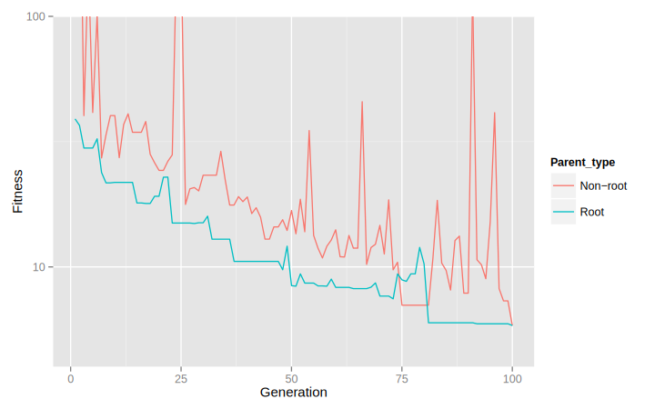The big picture
Here we try this on a variety of problems and configurations.
Results are slightly positive:
- Definitely improved results for some situations
- In general led to an improvement or no difference
- In some instances it hurt
Suggests that parental asymmetries can matter and deserve further study.
Outline
- Introduction, asymmetries, and crossover bias
- Experimental setup
- Results
- Conclusions
Sub-tree crossover
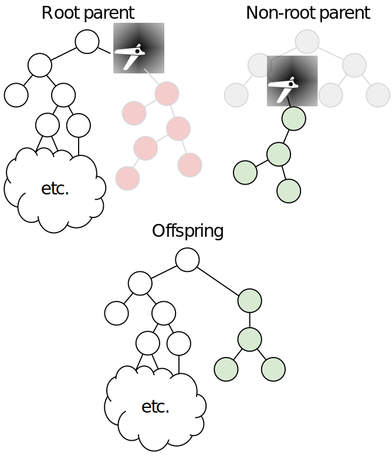Root parent vs. non-root parent
Crossover asymmetry: Root parent (typically) contributes more
Earlier observation that offspring did better when root parent was the more fit parent.
Is this true more generally?
Crossover bias probability
The likelihood that parents will be swapped (if necessary) to ensure that the more fit parent is the root parent.
Explore crossover bias probabilities 0, 0.25, 0.5, 0.75, & 1.00.
- 0.00 bias probability: Never swap; like regular crossover
- 1.00: Always ensure more fit parent is root parent.
Note: We have 50% chance that more fit parent is root parent even without swapping. E.g., 50% bias implies 75% of crossovers have more fit parent as root parent.
Experimental setup
5 test problems
- K Landscapes (K=6)
- ORDERTREE
- U.S. Change
- Sine regression
- Pagie-1 regression
| Parameter | Values |
|---|---|
| Crossover bias | 0, 0.25, 0.5, 0.75, 1 |
| Tournament size | 2, 3, 5, 7 |
| Elitism | 0 and 1% |
| Population size | 1,024 and 10,240 |
100 runs per treatment, each of 100 generations.
All implemented in ECJ.
Bias effective settings
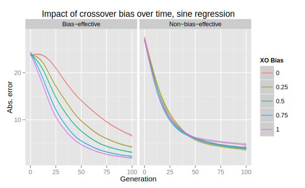Results indicate bias is (more) effective for some settings.
Most effective for
- Binary tournaments
- No elitism
- Larger populations (10,240)
Least effective for "reverse".
Results!
Below are three very different approaches to this. Preferences?
- Sue votes for the third option.
Results!
Results!
Results!
K Landscapes
Or, it kinda depends on which part of the elephant you've gotten hold of
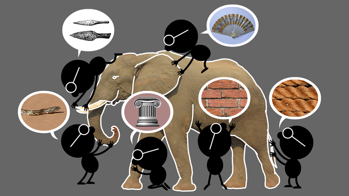K Landscapes
Overall, bias helps (some)
K Landscapes
Great for the bias-effective settings!
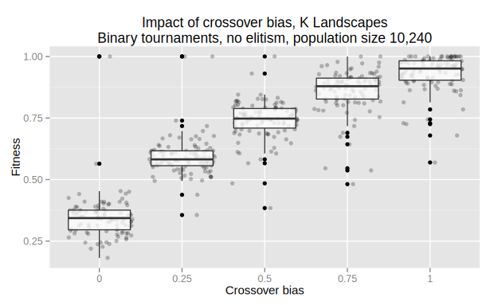K Landscapes
Highly varied across tournament sizes

ORDERTREE
Bias is generally helpful
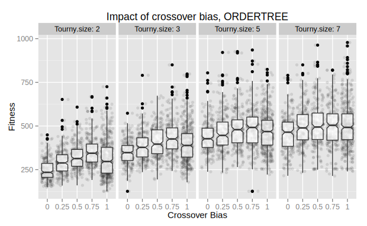ORDERTREE
Bias 0.75 better than 1.0
U.S. Change
Across all treatments, nothing much

U.S. Change
Major impact on successes with effective settings
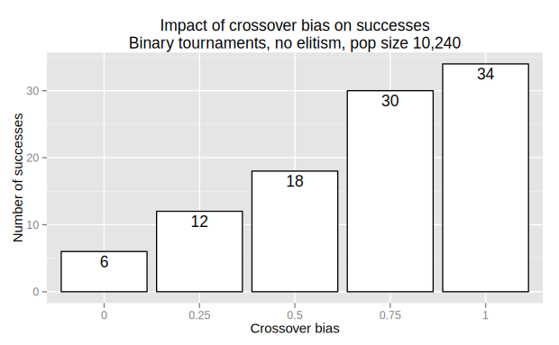Pagie-1 regression
Good for binary tournaments;
bad for larger tournaments

Pagie-1 regression
For effective settings, good for binary tournaments; neutral elsewhere
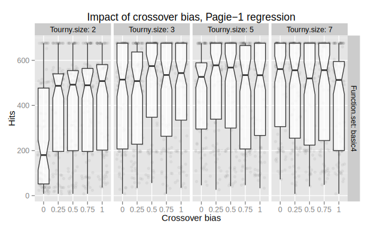Sine regression
Good for effective settings…
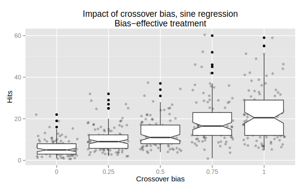Sine regression
…neutral elsewhere
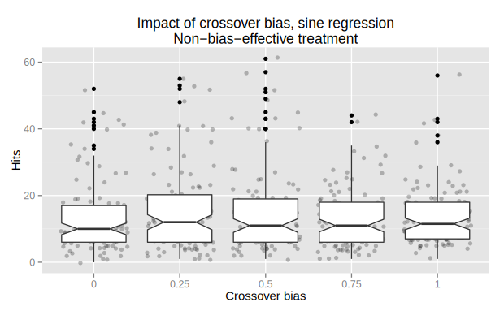Parental fitness differences
Definitely higher for binary fitnesses
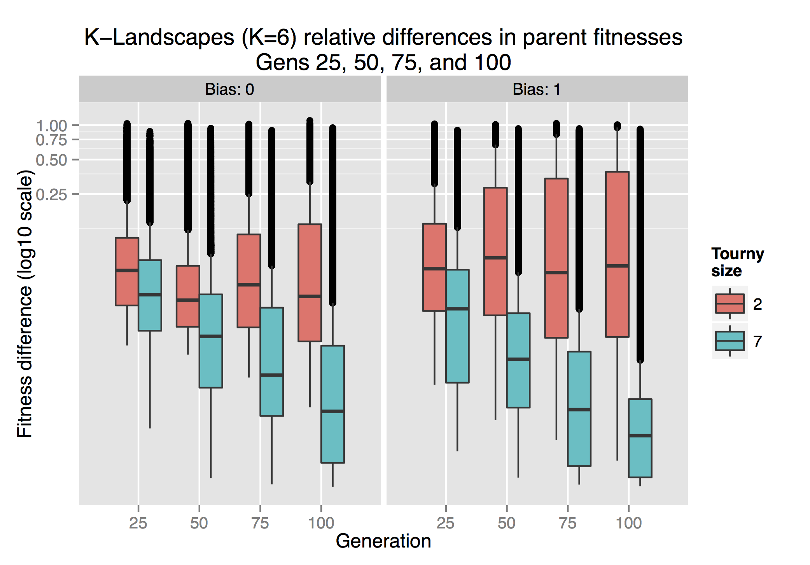Point of View
Press ESC to enter the slide overview.
Hold down alt and click on any element to zoom in on it using zoom.js. Alt + click anywhere to zoom back out.
Touch Optimized
Presentations look great on touch devices, like mobile phones and tablets. Simply swipe through your slides.
Fragments
Hit the next arrow...
... to step through ...
... a fragmented slide.
Fragment Styles
There's different types of fragments, like:
grow
shrink
fade-out
current-visible
highlight-red
highlight-blue
Transition Styles
You can select from different transitions, like:
None -
Fade -
Slide -
Convex -
Concave -
Zoom
Themes
reveal.js comes with a few themes built in:
Black (default) -
White -
League -
Sky -
Beige -
Simple
Serif -
Blood -
Night -
Moon -
Solarized
Slide Backgrounds
Set data-background="#dddddd" on a slide to change the background color. All CSS color formats are supported.
Image Backgrounds
<section data-background="image.png">Tiled Backgrounds
<section data-background="image.png" data-background-repeat="repeat" data-background-size="100px">Video Backgrounds
<section data-background-video="video.mp4,video.webm">... and GIFs!
Background Transitions
Different background transitions are available via the backgroundTransition option. This one's called "zoom".
Reveal.configure({ backgroundTransition: 'zoom' })Background Transitions
You can override background transitions per-slide.
<section data-background-transition="zoom">Pretty Code
function linkify( selector ) {
if( supports3DTransforms ) {
var nodes = document.querySelectorAll( selector );
for( var i = 0, len = nodes.length; i < len; i++ ) {
var node = nodes[i];
if( !node.className ) {
node.className += ' roll';
}
}
}
}
Code syntax highlighting courtesy of highlight.js.
Marvelous List
- No order here
- Or here
- Or here
- Or here
Fantastic Ordered List
- One is smaller than...
- Two is smaller than...
- Three!
Tabular Tables
| Item | Value | Quantity |
|---|---|---|
| Apples | $1 | 7 |
| Lemonade | $2 | 18 |
| Bread | $3 | 2 |
Clever Quotes
These guys come in two forms, inline:
“The nice thing about standards is that there are so many to choose from”
and block:
“For years there has been a theory that millions of monkeys typing at random on millions of typewriters would reproduce the entire works of Shakespeare. The Internet has proven this theory to be untrue.”
Intergalactic Interconnections
You can link between slides internally, like this.
Speaker View
There's a speaker view. It includes a timer, preview of the upcoming slide as well as your speaker notes.
Press the S key to try it out.
Export to PDF
Presentations can be exported to PDF, here's an example:
Global State
Set data-state="something" on a slide and "something"
will be added as a class to the document element when the slide is open. This lets you
apply broader style changes, like switching the page background.
State Events
Additionally custom events can be triggered on a per slide basis by binding to the data-state name.
Reveal.addEventListener( 'customevent', function() {
console.log( '"customevent" has fired' );
} );
Take a Moment
Press B or . on your keyboard to pause the presentation. This is helpful when you're on stage and want to take distracting slides off the screen.
Much more
- Right-to-left support
- Extensive JavaScript API
- Auto-progression
- Parallax backgrounds
- Custom keyboard bindings